Successfully launched a VM on GCP on the first try
Step-by-step guide to launching your first VM instance and configuring it on Google Cloud Platform (GCP).

How to launch a VM virtual machine on Google Cloud Platform (GCP)?
It may sound complex, but in practice, it’s quite straightforward.
If you haven’t had any experience with setting up a host before, this time, we’ll document the steps for you.
Create a new VM instance
There’s not much to be concerned about. Once you’re in the GCP console and on the VM instances page, simply choose the desired specifications, give it a name, and click ‘Create’.
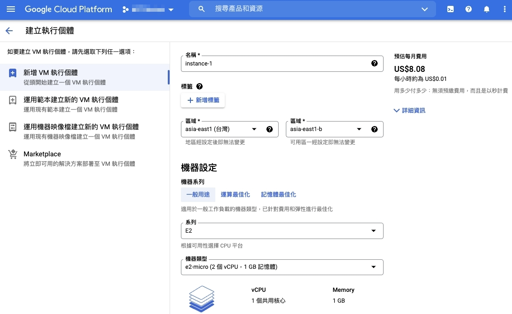
Assigning a static external IP address
To ensure that our service has a consistent IP address, we can change the external IP type from ephemeral to static.
Please note that converting an ephemeral IP to a static IP may incur additional charges.
First, select the VM instance you want to modify.
Click on the ellipsis menu (the three dots), and choose View network details.
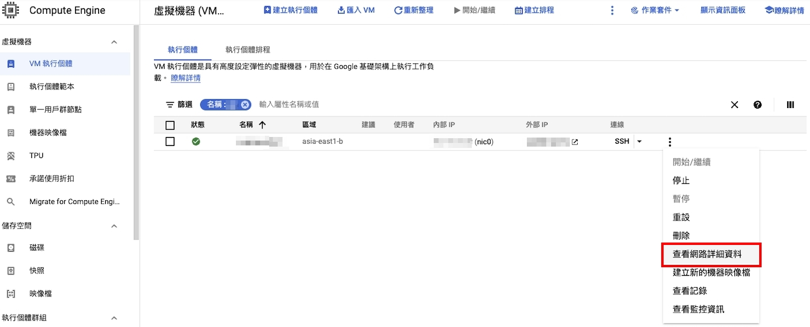
Next, from the left-hand menu, select the ‘External IP addresses’ tab.
In the Users column, locate the VM instance you just created.
You’ll notice that the Name field for the target is currently empty.
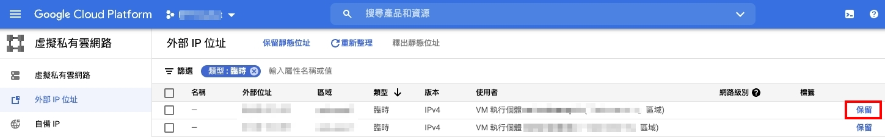
Click on Reserve on the left-hand side, and at this point, it will prompt you to enter a name.
Once you’ve provided a name, your VM instance’s IP address will remain unchanged even after service restarts.
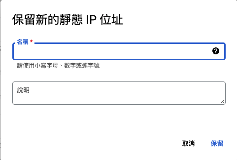
Opening external ports
Your virtual machine is up and running, and you’ve also secured a static external IP.
Now, it’s time to establish a connection!
You enter the IP address in your browser and… can’t access it! Huh?
Commonly used network service ports
By default, when you create a VM, only port 22 for SSH connections is open.
If you set up firewall rules during the creation, it will apply the http-server and https-server network tags, allowing your VM to receive requests on ports 80 and 443.
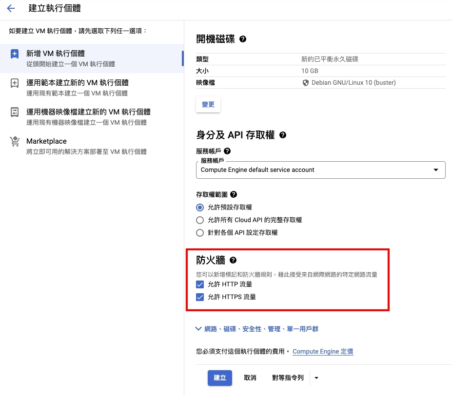
You can check the ‘Network tags’ section in the VM’s information page.
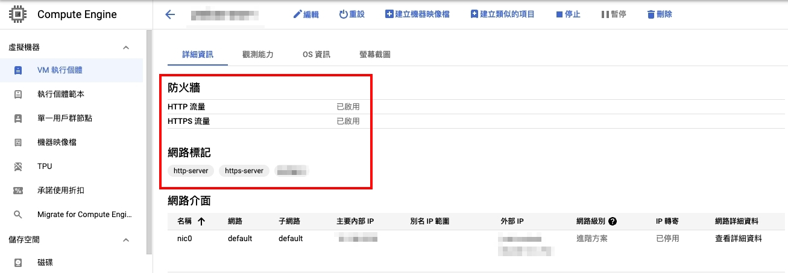
If you find that these ports are not open, and you wish to enable them, click on the ‘Edit’ button for the VM, and navigate to the Firewall settings.
Select the http-server and https-server rules that were not checked during initial setup.
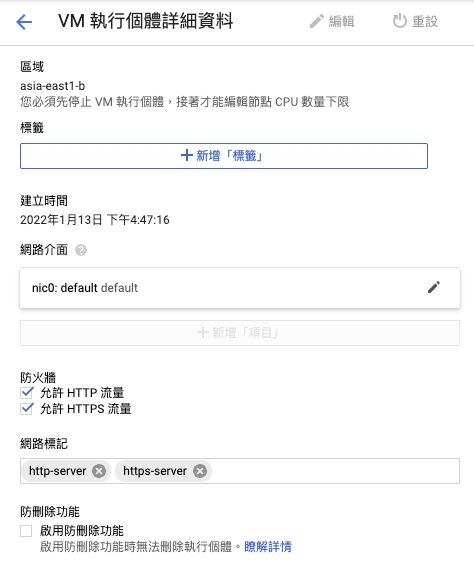
After successfully applying these changes, your VM will be able to receive incoming requests on ports 80 and 443.
Other port
If your service requires the use of a different port, you will need to configure it manually.
Let’s use port 8080 as an example for configuration.
Create a firewall rule
Select the VM instance you want to modify, and from the rightmost three-dot menu, choose ‘View network details’ to access the ‘Virtual Private Cloud network.
Then, on the left-hand menu, select ‘Firewall’ and click on ‘Create firewall rule’.
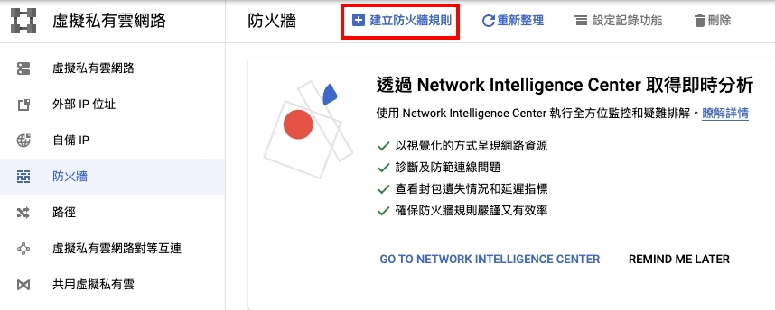
For the most part, you can use the default values.
Determine if you need to customize based on the provided explanations.
There are only a few areas that require adjustments.
Target tags
These are network tags used when selecting firewall rules later on.
They serve the same purpose as the http-server tag when configuring port 80, acting as identifiers.
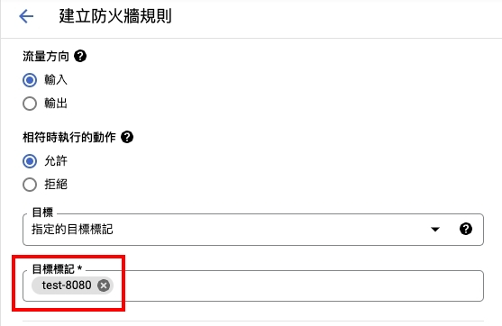
Source IPv4 range
This is where you specify trusted IP locations.
If you want to make it publicly accessible, set it to 0.0.0.0/0 to accept requests from all sources.
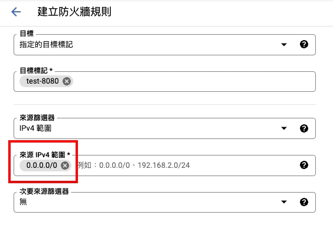
Protocol and Ports
To demonstrate opening multiple ports simultaneously, we’ve added port 8089.
This allows you to specify the external availability of both TCP ports 8080 and 8089.
You can observe that ports are separated by a comma ,.
If you use a dash -, you can specify a range of ports to be opened.
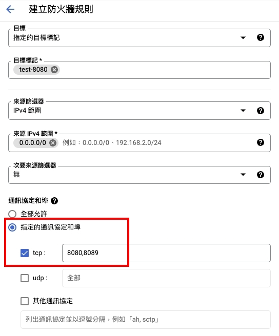
Applying the Firewall Rule
Go back to Compute Engine and select the VM instance where you want to apply the rule. Click the ‘Edit’ button.
Manually enter the Target tags you filled out when creating the firewall rule in the Network tags field.
After saving, the rule will be applied.
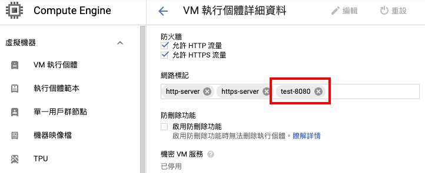